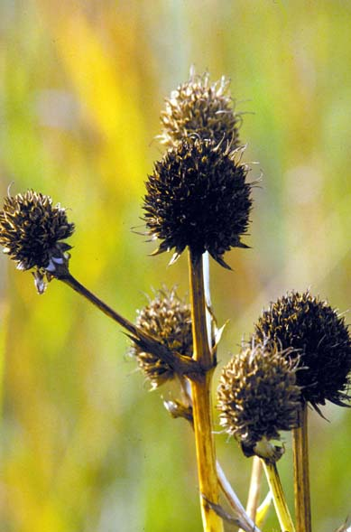
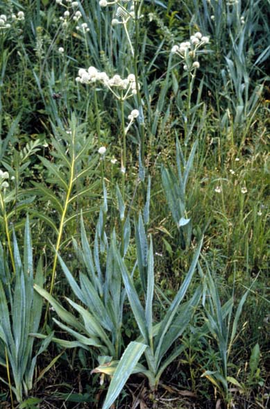
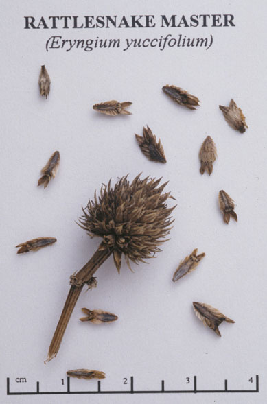
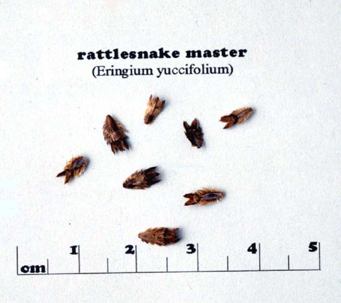

Eryngium Yuccifolium
Family: Apiaceae
Rattlesnake Master
Swink/Wilhelm # 9



Click to view larger photo
FLOWERING: July to early September
SEED TIMING: October
HABITAT: Dry to mesic prairie
DIAGNOSTIC FEATURES: 2.5 to 4 feet high. Bristly, round, green flower heads with prickly, spiky, yucca-like leaves.
TO PICK: Look for brown stem and brown, round seed heads. Very prickly. Wear gloves. Break or clip off entire head. Later process dried heads through a screen to release seeds. The top doesn't look different even when seeds are gone. Test to be sure there are seeds left in the heads by shaking or stroking.